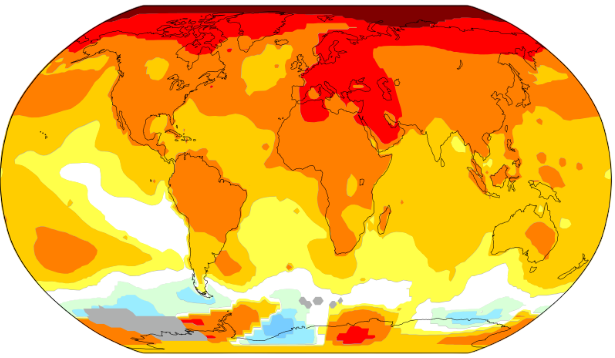

Map 1
Global temperature change
Tap or hover over a marker to see the record temperature in that city.

Sydney: 42°C (summer)
Shanghai: 36.7°C (late spring)
Phoenix: 47.8°C (summer)
Most heatwave prone zone
Places
Sydney
Shanghai
Phoenix
South Asia, most heatwave prone
Temperature change (°C)
below −1
−1 to −0.5
−0.5 to −0.2
−0.2 to 0.2
0.2 to 0.5
0.5 to 1
1 to 2
2 to 4
above 4
Map 2
Major climate protests around the world
Click a marker or the outlined region to read more.
Major protest city
Region with growing activism
Design notes
I designed custom marker icons and added popups and overlays to both maps. The markers on the static map are placed with CSS so they stay in the right place at every screen size.